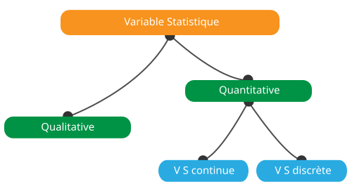
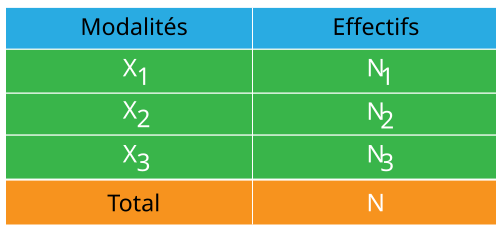
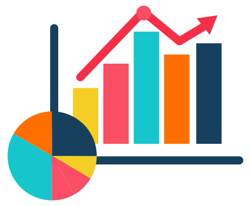

1- La statistique descriptive
est la branche des statistiques qui élabore où besoin est, des méthodes
de collecte, de traitement, d'analyse quantitative et qualitative des données.
L'objectif de la statistique descriptive est de décrire, c'est-à-dire de
résumer ou représenter, par des statistiques, les données disponibles quand
elles sont nombreuses.
2- La population statistique est l'ensemble des faits, d'individus, d'objets ou de phénomènes sur lesquels l'étude statistique porte.
3- Une unité statistique est un élément constitutif de la population statistique
4- Un caractère statistique
est une propriété distinctive de l'unité statistique à laquelle l'on s'interesse.
Ex: Age, Sexe, Religion, ...
Un caractère est dit quantitatif lorsqu'il est
mesurable et qualitatif lorsqu'il ne l'est pas.
5- Les modalités statistique
sont l'ensemble des valeurs ou situations possibles qu'on peut attribuer à
un caractère statistique
Ex: Masculin/Feminin
pour le sexe
6- Une variable statistique
se définit comme une caractéristique observable ou mesurable pouvant prendre plusieurs
valeurs chez des individus issus d'une population d'intérêt
Il existe principalement deux groupes de variables : les variables quantitatives et les
variables qualitatives, qui peuvent être subdivisés en plusieurs sous-groupes.
La reconnaissance des différents types de variables est la première étape d’une analyse
de données car le choix des outils et méthodes statistiques à utiliser en dépend.
6-1 Une variable quantitative
est une variable dont les valeurs sont des nombres qui peuvent être ordonnés et additionnés
c’est-à-dire qui ont un sens numériquement parlant. On différencie deux types de variables
quantitatives : les variables quantitatives continues et discrètes.
On parle d’une variable quantitative continue quand celle-ci
correspond à un interval de valeurs typiquement issues d’une mesure, et de variable quantitative
discrète lorsque la variable ne peut prendre qu’un nombre fini
de valeurs isolées, souvent entières.
6-2 Une variable qualitative
est une variable dont les valeurs sont des qualités appelées modalités
(situation professionnelle : actif, étudiant, retraité...). Les modalités peuvent être exprimées
sous forme littérale ou numérique. Comme pour les variables quantitatives, on différencie deux
types : les variables qualitatives nominales et ordinales.
Les variables qualitatives nominales se caractérisent par des
modalités qui ne peuvent pas être ordonnées, comme la couleur des cheveux (blanc, noir, roux…) et
par opposition, les variables qualitatives ordinales se
caractérisent par des modalités qui peuvent être ordonnées comme, par exemple, le niveau d’étude
(primaire, secondaire, supérieur).

7- L'effectif est le nombre d'unité statistique possedant une modalité donnée.Il est noté Ni et est encore appelée fréquence absolue.
8- Une enquete statistique
est une opération destinée à la collecte des données ou informations.
On parle de
recensement ou d'enquête exhaustive quand elle est
faite sur toutes les unités de la population et de sondage
quand elle faite sur une portion de la population.
9- Le dépouillement est l'opération qui consiste à dénombrer ou à compter les données ou observations recueillies à l'issu d'une enquête statistique.
10- Un tableau statistique ou distribution statistique
est un tableau dans lequel sont consignés les données ou observations recueillies à
l'issu de l'enquête statistique
Le tableau simple permet de faire une description
selon un seul caractère et le tableau à double entrée permet de faire une description
selon deux caractères simultanément
NB: Pour qu'un tableau ait de la valeur
il lui faut un titre simple, claire et précis permettant de décrire un phénomène concret
en un lieu donné et à une date bien déterminée

11- La représentation graphique
permet d'avoir une appréhension globale des données. Elle
se fait par le biais des figûres géométriques: on distingue les graphiques
d'illustrations et les courbes cumulatives.
- Le diagramme à secteurs ou
diagramme circulaire, le diagramme à tuyaux d'orgue et le diagramme à barres
seront retenus pour représenter une distribution à caractère qualitatif tandis
que
- Le diagramme à baton, la boîte à moustaches et l'histogramme sont les
plus utilisés pour illustrer une distribution à caractère quantitatif.

12- Les paramètres descriptifs permettent de résumer en quelques chiffres les distributions des variables qui constituent l’échantillon. Selon le type de la variable, on utilisera des paramètres différents. Ainsi, on calculera des effectifs et des fréquences selon les modalités d’une variable qualitative et un plus large éventail de paramètres descriptifs séparés en 2 groupes pour une variable quantitative: les paramètres de position et les paramètres de dispersion
12-1 Les paramètres de position sont des mesures de tendance centrale qui définissent des valeurs autour desquelles se répartissent les observations.
12-1-a La moyenne est le rapport entre la somme des valeurs de la série statistique et le nombre de valeurs.
12-1-b La mediane est la valeur qui permet de partager une serie numérique ordonnée en deux parties de même nombre d'éléments
12-1-c Le mode est la valeur la plus représentée d'une variable quelconque dans une population pas forcément unique.
12-1-d Les quartiles sont les trois valeurs qui partagent la distribution en quatre groupes d’effectifs égaux, Le premier quartile sépare 25 % des valeurs les plus faibles et 75 % des valeurs les plus élevées, le second quartile correspond à la médiane, et le troisième quartile sépare 75 % des valeurs les plus faibles et 25 % des valeurs les plus élevées.
12-1-e Les percentiles sont les 99 valeurs qui partagent la distribution en 100 groupes d’effectifs égaux. Un percentile est la valeur sous laquelle un certain pourcentage des observations se trouve.
12-2 Les paramètres de dispersion évaluent la répartition des observations autour des valeurs centrales
12-2-a L'etendue est la difference entre la valeur la plus élevée de la variable et la valeur la plus petite.
12-2-b La variance est la mesure de la dispersion des échantillons autour de la moyenne.
12-2-c L' écart type est l'indicateur utilisé pour mesurer la dispersion d'une série statistique quantitative, égal à la racine carrée de la variance
12-2-d L’intervalle interquartile est l’écart entre le premier et le troisième quartile. Il contient 50 % des données (25 % de part et d’autre de la médiane).
13- La fréquence est le rapport entre l'effectif d'une valeur et l'effectif total.
14- La covariance est une méthode mathématique d'évaluation du sens de variation de deux variables permettant de qualifier leur independance
15- Le coefficient de variation
est l'indicateur qui permet de mesurer l'homogénéïté d'une distribution statistique
- S'il est inférieur ou égal à 33% alors la distribution est homogène
- S'il
est supérieur à 33% alors la distribution est hétérogène.